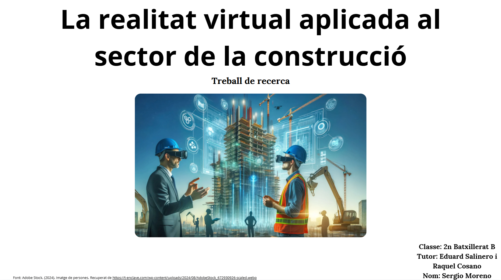
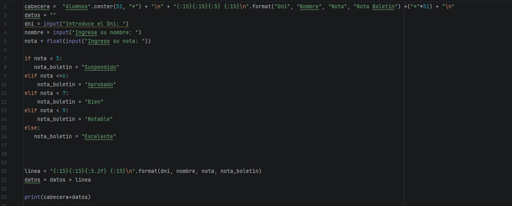

La realitat virtual és una tecnologia que permet crear entorns simulats i immersius, i en el sector de la construcció pot tenir un gran impacte. Per aquest motiu, he decidit desenvolupar un projecte que explorés l'impacte d'aquesta tecnologia en aquest sector. El meu objectiu va ser investigar com la realitat virtual pot millorar la planificació, el disseny i la visualització de projectes de construcció, així com la formació dels professionals del sector. Aquest projecte va ser un repte complicat ja que vaig haver d'aprendre eines relacionades amb la realitat virtual com Blender però vaig aconseguir superar els obstacles i vaig obtenir resultats molt interessants.

La creació d'un boletí de notes mitjançant Pyhon em va permetre aprendre a dissenyar un programa amb la capacitat d' atribuir la qualificació de l'alumne: "Suspés, Aprobat, Bé, Notable i Excel·lent".
